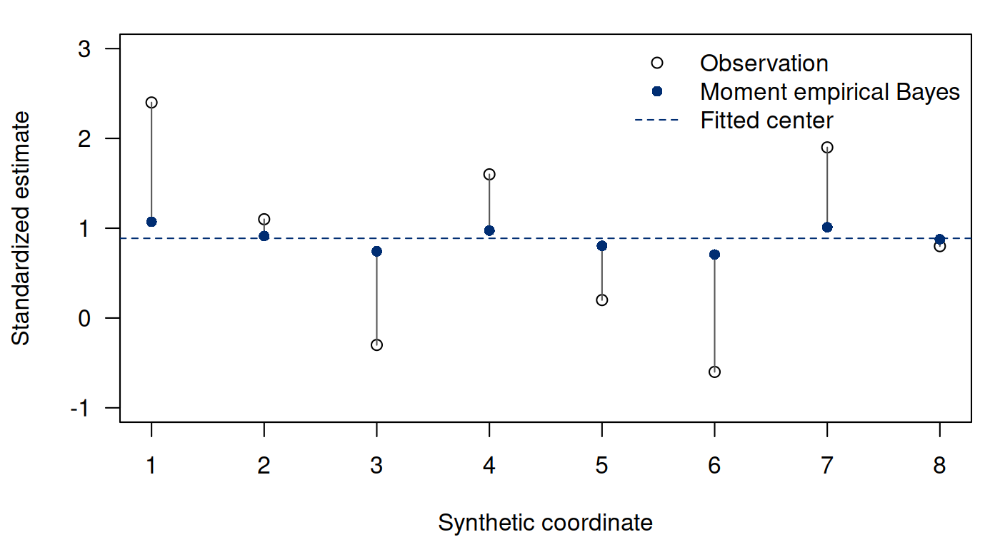
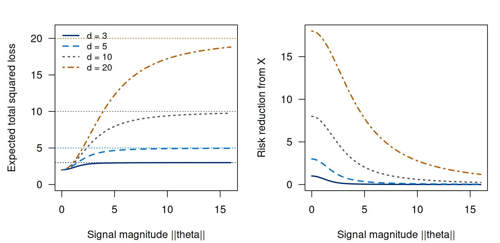

Notes on Statistical Inference
Chapter 9. Empirical Bayes and the geometry of shrinkage
Why estimate related quantities together? Suppose several laboratories report standardized estimates of different effects. Each estimate has appreciable sampling error, and there is reason to expect many effects to lie near a shared center. An analysis of each laboratory in isolation discards this structure; forcing all effects to be equal discards their differences. Partial pooling uses evidence about their dispersion to choose an intermediate action. To evaluate pooling, we need to ask whether it improves the estimates or decisions for which these quantities will be used; a smoother graph alone cannot answer that question.
Chapter 8 derived posterior means under specified priors, while Chapter 4 compared estimators through their loss and risk. We now bring these calculations to a vector of related means. A hierarchical model gives a pooling rule; empirical Bayes estimates its strength from the vector; a frequentist risk identity lets us assess one precisely defined shrinkage procedure. The guarantee concerns total squared error across the vector, not improvement for every coordinate.
9.1 A vector experiment and an explicit loss
Throughout the main argument, observe one vector (9.1) The integer counts mean coordinates, not repeated observations on one mean. Conditional on the fixed vector , the coordinates are independent with known variance one. A raw estimate with a common known standard error can be divided by that standard error to reach this scale. Different standard errors, dependence, missing coordinates, or uncertainty about the variances require a different argument. Standardization alone does not make correlated measurements independent.
The estimator has risk for every : each coordinate contributes one. An estimator can reduce variance by moving observations toward a center, but introduces bias if true effects lie away from that center. With a fixed weight and fixed center zero, has (9.2) For , this risk eventually exceeds as the signal grows. An appealing prior-average performance therefore does not prove uniform improvement at every fixed parameter. The James–Stein construction adapts the weight to the observed vector and escapes this particular fixed-weight limitation.
Total squared loss expresses equal importance of all standardized coordinates. If one coordinate is scientifically primary, or actions have different consequences, that loss may be inappropriate. Loss is part of the problem specification, as in Chapter 4; a theorem for one loss cannot be transferred silently to another.
9.2 Normal–normal pooling from first principles
For a working hierarchical model, suppose independently (9.3) The exchangeability assumption assigns the same prior distribution to coordinates whose labels convey no further information in this model. It is a substantive modeling choice. Measurements belonging to different biological pathways, populations, or exposure scales may need distinct centers or covariates rather than one common pool.
Hold fixed initially. The posterior kernel for one coordinate is Completing the square, exactly as in Chapter 8, gives (9.4) The posterior mean is the squared-error Bayes action. Small between-coordinate variance yields stronger pooling, while large makes approach one. At the boundary , the prior is degenerate at , and the limiting posterior also places all probability there. This boundary is a different model component rather than a normal density with positive variance.
The marginal distribution follows without an integration trick. Write , where and are independent. Their sum is normal with variance : (9.5) The usefulness of the normal hierarchy and empirical-Bayes construction depends on whether a common marginal model adequately represents these coordinates; estimating its parameters does not remove that modeling choice.
Under the stated prior, the Bayes risk of the posterior mean is , because the conditional posterior variance is in every coordinate. This is an average over the prior distribution of , distinct from fixed- risk in Equation 9.2. Retaining the subscript or explicitly stating the averaging distribution prevents an apparent contradiction between those two calculations.
9.3 Estimating the pooling strength
Empirical Bayes estimates hyperparameters from the marginal distribution, then inserts those estimates into the posterior rule. Define and . Under Equation 9.5, and . For , a constrained moment estimate is (9.6) The truncation enforces the variance parameter’s nonnegative domain; the resulting estimate is not unbiased. A negative untruncated value means the observed dispersion is less than the known noise variance, not that a negative variance is meaningful.
Maximum marginal likelihood uses a different denominator. Put . Apart from constants, For every , the maximizer in is . Differentiating the profile likelihood in gives the unconstrained optimizer . Hence (9.7) Moment and likelihood fitting need not yield the same amount of pooling, especially with few coordinates. If is fixed externally instead, replace by ; both the marginal variance moment and likelihood estimators use . Estimating the center costs a degree of freedom in the unbiased moment calculation.
Consider a new synthetic vector of standardized observations . These eight coordinates illustrate pooling of different means; they are not repeated observations on the single mean from the previous chapter. Here and . The moment variance estimate is and its weight ; the marginal likelihood estimate is zero and therefore pools all eight coordinates at the fitted center. The two answers are close scientifically in their strong pooling, but materially different numerically at the model boundary.
Run the complete R example
Dependencies: base R. This complete block includes the data, setup and calculations. Run it in a fresh R session. Short code excerpts above explain individual steps; this block supplies their shared setup. Figures and tables are written to a temporary directory.
Complete R example
# Complete R example. Synthetic data; no external files are required.
local({
previous.directory <- getwd()
example.directory <- tempfile("biomedical-example-")
dir.create(example.directory)
setwd(example.directory)
on.exit(setwd(previous.directory))
dir.create("generated",showWarnings=FALSE)
# empirical-Bayes and James-Stein computations.
dir.create("generated", showWarnings = FALSE)
set.seed(802312)
options(digits = 10)
js <- function(x, positive = FALSE) {
d <- ncol(x)
if (d < 3L) stop("Fixed-center James-Stein comparison requires d >= 3")
s <- rowSums(x^2)
weight <- 1 - (d - 2) / s
weight[s == 0] <- 0 # Definition at the probability-zero origin.
if (positive) weight <- pmax(0, weight)
x * weight
}
# Q ~ noncentral chi-square(d, lambda). Its Poisson mixture gives E(1/Q).
reciprocal.exact <- function(d, lambda) {
stopifnot(d > 2, lambda >= 0)
if (lambda == 0) return(1 / (d - 2))
top <- qpois(1 - 1e-13, lambda / 2)
j <- 0:top
sum(dpois(j, lambda / 2) / (d + 2 * j - 2))
}
risk.exact <- function(d, magnitude) {
d - (d - 2)^2 * reciprocal.exact(d, magnitude^2)
}
stopifnot(abs(risk.exact(3, 0) - 2) < 1e-12,
abs(risk.exact(20, 0) - 2) < 1e-12)
# Independent Laplace-transform integral for noncentral cases.
integral.checks <- expand.grid(d = c(3, 5, 10, 20), magnitude = c(0, 2, 8))
integral.checks$mixture <- mapply(function(d, m) reciprocal.exact(d, m^2),
integral.checks$d, integral.checks$magnitude)
integral.checks$integral <- mapply(function(d, m) {
integrate(function(t) (1 + 2*t)^(-d/2) * exp(-m^2*t/(1+2*t)),
0, Inf, rel.tol = 1e-9, subdivisions = 1000)$value
}, integral.checks$d, integral.checks$magnitude)
stopifnot(max(abs(integral.checks$mixture-integral.checks$integral)) < 2e-8)
write.csv(integral.checks, "generated/ch12-exact-checks.csv", row.names = FALSE)
# Synthetic standardized estimates.
x <- c(2.4, 1.1, -.3, 1.6, .2, -.6, 1.9, .8)
d <- length(x); mu.hat <- mean(x); s <- sum((x-mu.hat)^2)
tau2.moment <- max(0, s/(d-1)-1)
tau2.mle <- max(0, s/d-1)
weight.moment <- tau2.moment/(1+tau2.moment)
weight.mle <- tau2.mle/(1+tau2.mle)
example <- data.frame(coordinate = seq_along(x), observation = x,
eb.moment = mu.hat+weight.moment*(x-mu.hat),
eb.mle = mu.hat+weight.mle*(x-mu.hat),
js.zero = as.vector(js(matrix(x, nrow = 1))))
write.csv(example, "generated/ch12-example.csv", row.names = FALSE)
example.parameters <- data.frame(d = d, mu.hat = mu.hat, residual.sum = s,
tau2.moment = tau2.moment, tau2.mle = tau2.mle,
weight.moment = weight.moment, weight.mle = weight.mle)
write.csv(example.parameters, "generated/ch12-example-parameters.csv", row.names = FALSE)
# Independent numerical checks of posterior moments and vector derivatives.
posterior.mean <- mu.hat+weight.moment*(x[1]-mu.hat)
joint <- function(t) dnorm(x[1], t, 1)*dnorm(t, mu.hat, sqrt(tau2.moment))
normalizer <- integrate(joint, -Inf, Inf, rel.tol=1e-10)$value
quad.mean <- integrate(function(t) t*joint(t), -Inf, Inf, rel.tol=1e-10)$value/normalizer
quad.var <- integrate(function(t) (t-posterior.mean)^2*joint(t),
-Inf, Inf, rel.tol=1e-10)$value/normalizer
point <- c(1.2,-.4,.8,2,-1); a <- 3; step <- 1e-6
g <- function(v) -a*v/sum(v^2)
numeric.divergence <- sum(vapply(seq_along(point), function(j) {
plus <- minus <- point; plus[j] <- plus[j]+step; minus[j] <- minus[j]-step
(g(plus)[j]-g(minus)[j])/(2*step)
}, numeric(1)))
exact.divergence <- -a*(length(point)-2)/sum(point^2)
stopifnot(abs(quad.mean-posterior.mean)<1e-9,
abs(quad.var-weight.moment)<1e-9,
abs(numeric.divergence-exact.divergence)<1e-7)
write.csv(data.frame(quad.mean=quad.mean, formula.mean=posterior.mean,
quad.variance=quad.var, formula.variance=weight.moment,
numeric.divergence=numeric.divergence,
formula.divergence=exact.divergence),
"generated/ch12-derivation-checks.csv", row.names=FALSE)
# Paired comparison: all procedures see each exact same noise vector.
B <- 100000L
grid <- expand.grid(d = c(5, 10, 20), magnitude = c(0, 1, 2, 4, 8, 16))
rows <- vector("list", nrow(grid))
for (k in seq_len(nrow(grid))) {
d <- grid$d[k]; mag <- grid$magnitude[k]
theta <- c(mag, rep(0, d-1))
z <- matrix(rnorm(B*d), nrow = B, ncol = d)
xx <- sweep(z, 2, theta, "+")
loss.x <- rowSums(z^2)
loss.js <- rowSums(sweep(js(xx), 2, theta, "-")^2)
loss.pp <- rowSums(sweep(js(xx, TRUE), 2, theta, "-")^2)
difference <- loss.js-loss.x
pp.difference <- loss.pp-loss.x
sure <- d-(d-2)^2/rowSums(xx^2)
rows[[k]] <- data.frame(d = d, magnitude = mag, lambda = mag^2, replicates = B,
risk.x = mean(loss.x), risk.js = mean(loss.js),
risk.js.exact = risk.exact(d, mag),
mcse.js = sd(loss.js)/sqrt(B),
paired.difference = mean(difference),
paired.mcse = sd(difference)/sqrt(B),
risk.positive.part = mean(loss.pp),
paired.pp.difference = mean(pp.difference),
paired.pp.mcse = sd(pp.difference)/sqrt(B),
sure.mean = mean(sure))
}
risk <- do.call(rbind, rows)
write.csv(risk, "generated/ch12-risk-grid.csv", row.names = FALSE)
# Monte Carlo standard errors use d >= 5: squared-loss variance is finite.
# Exact deterministic risk grids also include d = 3, with no CLT claim.
stopifnot(all(is.finite(as.matrix(risk))),
max(abs(risk$risk.js-risk$risk.js.exact)/(risk$mcse.js+.001)) < 7)
# More precise coordinate audit exposes the distinction from total risk.
B.coord <- 400000L; theta <- c(4, rep(0, 4)); d <- length(theta)
z <- matrix(rnorm(B.coord*d), nrow = B.coord)
xx <- sweep(z, 2, theta, "+")
loss.x <- z^2
loss.js <- sweep(js(xx), 2, theta, "-")^2
coordinate <- data.frame(coordinate = seq_len(d), theta = theta,
risk.x = colMeans(loss.x), risk.js = colMeans(loss.js),
difference = colMeans(loss.js-loss.x),
paired.mcse = apply(loss.js-loss.x, 2, sd)/sqrt(B.coord))
write.csv(coordinate, "generated/ch12-coordinate-risk.csv", row.names = FALSE)
total.difference <- rowSums(loss.js-loss.x)
write.csv(data.frame(d=d, magnitude=4, replicates=B.coord,
risk.x=mean(rowSums(loss.x)), risk.js=mean(rowSums(loss.js)),
difference=mean(total.difference),
paired.mcse=sd(total.difference)/sqrt(B.coord)),
"generated/ch12-coordinate-total.csv", row.names=FALSE)
# Smooth deterministic risk data: suitable for a web control without fresh MC.
interaction <- expand.grid(d = c(3, 5, 10, 20), magnitude = seq(0, 16, by=.25))
interaction$risk.x <- interaction$d
interaction$risk.js <- mapply(risk.exact, interaction$d, interaction$magnitude)
interaction$risk.reduction <- interaction$risk.x-interaction$risk.js
write.csv(interaction, "generated/ch12-interaction-risk.csv", row.names = FALSE)
writeLines(c("Deterministic fixed-center James-Stein risk under X ~ N_d(theta,I).",
"d: number of mean coordinates; values 3,5,10,20.",
"magnitude: Euclidean norm of theta; grid 0 to 16 in steps of .25.",
"risk.x: expected total squared loss of the raw vector X, equal to d.",
"risk.js: expected total squared loss from the Poisson-mixture formula.",
"risk.reduction: risk.x minus risk.js; not a coordinate-risk reduction.",
"No Monte Carlo standard errors apply to this deterministic grid."),
"generated/ch12-interaction-schema.txt")
plot.risk <- function() {
par(mfrow=c(1,2), mar=c(4.2,4.4,2,1), las=1)
colors <- c("#002D72", "#0072CE", "#555555", "#B35C00")
for(panel in 1:2) {
plot(NA, xlim=c(0,16), ylim=if(panel==1)c(0,21) else c(0,18),
xlab="Signal magnitude ||theta||", ylab=if(panel==1)
"Expected total squared loss" else "Risk reduction from X")
for(j in seq_along(colors)) {
v <- interaction[interaction$d==c(3,5,10,20)[j],]
lines(v$magnitude, if(panel==1)v$risk.js else v$risk.reduction,
col=colors[j], lty=j, lwd=2)
if(panel==1) abline(h=v$d[1], col=colors[j], lty=3)
}
if(panel==1) legend("topleft", legend=paste("d =",c(3,5,10,20)),
col=colors,lty=1:4,lwd=2,bty="n",cex=.85)
}
}
cairo_pdf("generated/ch12-risk.pdf", width=8, height=3.9); plot.risk(); dev.off()
png("generated/ch12-risk.png", width=1600, height=780, res=200); plot.risk(); dev.off()
plot.example <- function() {
par(mar=c(4.2,4.2,1.2,1), las=1)
plot(example$coordinate, example$observation, pch=1, ylim=c(-1,3),
xlab="Synthetic coordinate", ylab="Standardized estimate")
segments(example$coordinate, example$observation,
example$coordinate, example$eb.moment, col="#555555")
points(example$coordinate, example$eb.moment,pch=16,col="#002D72")
abline(h=mu.hat,lty=2,col="#002D72")
legend("topright", c("Observation", "Moment empirical Bayes", "Fitted center"),
pch=c(1,16,NA), lty=c(NA,NA,2), col=c("black","#002D72","#002D72"), bty="n")
}
cairo_pdf("generated/ch12-example.pdf",width=7,height=3.8);plot.example();dev.off()
png("generated/ch12-example.png",width=1400,height=760,res=200);plot.example();dev.off()
selected <- risk[risk$d==5 & risk$magnitude %in% c(0,4,8),]
tex <- c("\\begin{center}\\begin{tabular}{rrrrr}\\toprule",
"$\\|\\theta\\|$ & Exact JS risk & Simulated JS risk & Paired difference & MCSE\\\\\\midrule",
apply(selected,1,function(v) sprintf("%.0f & %.4f & %.4f & %.4f & %.4f\\\\",
as.numeric(v["magnitude"]),as.numeric(v["risk.js.exact"]),as.numeric(v["risk.js"]),
as.numeric(v["paired.difference"]),as.numeric(v["paired.mcse"]))),
"\\bottomrule\\end{tabular}\\end{center}")
writeLines(tex,"generated/ch12-risk-table.tex")
cat("Example parameters:\n"); print(example.parameters)
cat("Selected paired risk comparisons:\n"); print(selected)
cat("Coordinate-specific risk at theta=(4,0,0,0,0):\n");print(coordinate)
cat("Maximum independent reciprocal-mixture discrepancy:",
max(abs(integral.checks$mixture-integral.checks$integral)),"\n")
cat("Runtime record:\n"); print(sessionInfo())
cat("\nSelected numerical results\n")
for (candidate in c("reader", "summary", "summary.mc", "perf", "comparison", "route.comparison", "test", "tab", "exact", "workflow.ci", "coef.tab", "evaluation.table")) {
if (exists(candidate, inherits=FALSE)) {
value <- get(candidate, inherits=FALSE)
if (is.data.frame(value) || is.matrix(value)) { cat(candidate, "\n"); print(utils::head(value,8)) }
}
}
cat("R", as.character(getRversion()), "\n")
})
This excerpt shows a step inside the preceding complete R example; it uses that block’s data and setup.
x <- c(2.4,1.1,-.3,1.6,.2,-.6,1.9,.8)
d <- length(x); center <- mean(x)
Sc <- sum((x-center)^2)
tau2 <- max(0,Sc/(d-1)-1)
w <- tau2/(1+tau2)
estimate <- center+w*(x-center)
c(center=center, Sc=Sc, tau2=tau2, weight=w)
# 0.8875000, 7.9687500, 0.1383929, 0.1215686

The fitted center is not a known external target. With fixed but an improper flat prior on , the hierarchy gives . Integrating over this center uncertainty yields marginal posterior variance for each equal to , rather than . This follows from total variance: conditional variance is and conditional mean depends on through coefficient . At , the remaining variance is ; the common mean is still uncertain. A plug-in zero posterior variance would erase that uncertainty. This illustrative calculation conditions on known ; estimating the latter adds another uncertainty layer.
Center uncertainty also induces posterior dependence. With known, the coordinates are conditionally independent given , but for the law of total covariance gives (9.8) Thus the posterior covariance matrix is . At , all coordinates are the same uncertain mean; their differences have zero posterior variance, while each coordinate has variance . Distinguishing uncertainty about a contrast from uncertainty about an absolute level explains why complete pooling need not imply precise knowledge of every effect.
This excerpt shows a step inside the preceding complete R example; it uses that block’s data and setup.
d <- 4; tau2 <- 1; w <- tau2/(1+tau2)
V <- w*diag(d)+(1-w)*matrix(1,d,d)/d
c(variance=V[1,1], covariance=V[1,2],
contrast.variance=V[1,1]+V[2,2]-2*V[1,2])
# 0.625, 0.125, 1.0009.4 Stein’s identity and an unbiased estimate of risk
The hierarchy has supplied a shrinkage rule. To evaluate its repeated-sampling performance, we now return to fixed in Equation 9.1; no prior is assumed true. For an appropriate scalar function of the vector, normal integration by parts gives (9.9) To see the sign and boundary condition, the normal density satisfies . Integrate over ; a vanishing boundary term leaves . Then integrate the other coordinates. Sufficient conditions include differentiability, integrable terms, and decay making these operations valid. Singular functions require a separate justification, supplied below.
Write any suitably regular estimator as . Expanding its total error and applying Equation 9.9 coordinatewise yields (9.10) Thus the realized expression is Stein’s unbiased risk estimate, or SURE. It estimates repeated-sampling total risk, not the unobserved error on this particular vector. It can be negative even though risk is nonnegative. Further, selecting a procedure by minimizing its observed SURE and reporting that same minimum as an unbiased assessment ignores selection. The identity evaluates a specified rule; it does not automatically validate unrestricted tuning after inspection.
A fixed shrinkage weight provides a check on the identity before we use a singular function. If , then and . SURE becomes Its expectation is , which simplifies to , recovering Equation (9.2). This calculation makes the distinction concrete: SURE is a data-based estimate of a specified procedure’s risk, and its expected value is the analytic risk curve.
For a constant , take away from zero and assign any finite value at zero, which has probability zero. Put . Direct differentiation gives (9.11) The coefficient comes from the geometry of this vector derivative. Replacing it with , or differentiating a data-dependent shrinkage factor as if it were constant, produces the wrong risk calculation.
For , is finite. Near the origin a bounded normal density and spherical volume element produce an integral proportional to ; outside a ball, is bounded. One rigorous route is to first use , then let decrease to zero. Its squared norm is bounded by , and the absolute derivatives by ; integrability permits passage to the limit. This establishes the identity for this singular rule, rather than assuming ordinary integration by parts automatically covers it.
9.5 James–Stein risk and its exact scope
Substitution into SURE gives (9.12) For and , the coefficient is negative and the expectation positive: this rule has smaller risk than for every fixed . Within this constant- family, the quadratic coefficient is minimized at .
Theorem 9.1 (Fixed-center James–Stein improvement). Under Equation 9.1, for , the estimator (9.13) has total squared-error risk (9.14) The value assigned at does not change the risk.
Proof. Equations 9.10–9.12, including their integrability justification, apply with . The finite expectation of a strictly positive random variable is positive, establishing strict improvement. ◻
At , and , so the risk is exactly two regardless of dimension . This follows by integrating the chi-square density, or by its gamma moment formula. The result does not claim zero risk at the origin; the shrinkage rule remains noisy and can reverse an observed coordinate’s sign.
For any fixed external center , translation gives the analogous rule and the same dominance conclusion. Replacing by is not the same proof. The residual vector then lives in a -dimensional subspace, and the estimated center has its own error. The centered construction uses a coefficient for this reason; simply using with a fitted center misapplies the fixed-center theorem. It need not produce a bad estimator, but requires its own proof. In an orthonormal coordinate system with first direction , estimating the unshrunk center direction contributes risk one. Shrinking the remaining normal coordinates with coefficient contributes For , their sum is below when , minimized within this family at . This residual-space argument distinguishes an externally fixed center from an estimated one while retaining the latter’s risk.
The positive-part modification replaces the factor by , eliminating sign reversal. It is included in the numerical comparison as a defined alternative. Its additional domination result requires a further argument not proved here; we do not infer that theorem from a few simulated parameter values. Similarly, empirical-Bayes fitting toward an estimated center is not covered by the displayed theorem merely because both methods shrink.
The theorem also illustrates a worst-case risk comparison. Product-normal proper priors have optimal Bayes risk , approaching as . For any proper prior, the smallest prior-average risk is a lower bound on the smallest worst-case risk. Taking the limit of these lower bounds shows that the minimax value in this experiment is , attained by . James–Stein risk is at most everywhere, so this rule is minimax too, despite strictly improving on at every finite . The raw vector is minimax and inadmissible. Strict pointwise dominance and equal supremum risk can coexist; the supremum need not be attained at a finite parameter.
9.6 An executable risk audit and what it can reveal
At fixed , simulate with independent standard normal coordinates and calculate the losses of both rules on the same vector. Pairing removes much of the shared noise from their difference. A Monte Carlo standard error for the estimated difference is the sample standard deviation of the paired differences divided by the square root of the number of independent repetitions.
This excerpt shows a step inside the preceding complete R example; it uses that block’s data and setup.
set.seed(802312)
d <- 5; B <- 100000; theta <- c(4,rep(0,d-1))
Z <- matrix(rnorm(B*d),nrow=B)
X <- sweep(Z,2,theta,"+")
S <- rowSums(X^2)
estimate <- X*(1-(d-2)/S)
loss.x <- rowSums(Z^2)
loss.js <- rowSums(sweep(estimate,2,theta,"-")^2)
difference <- loss.js-loss.x
c(difference=mean(difference),mcse=sd(difference)/sqrt(B))The complete R example uses seed 802312 and 100,000 repetitions for each of 18 configurations: and signal norms . It records each risk, paired differences and standard errors, SURE averages, and positive-part results. The table separates simulated risks and their Monte Carlo uncertainty from a deterministic James–Stein benchmark.
| Exact JS risk | Simulated JS risk | Paired difference | MCSE | |
|---|---|---|---|---|
| 0 | 2.0000 | 1.9826 | -3.0159 | 0.0131 |
| 4 | 4.4755 | 4.4871 | -0.5246 | 0.0045 |
| 8 | 4.8616 | 4.8635 | -0.1387 | 0.0023 |
For the benchmark, has a noncentral chi-square distribution with degrees of freedom and noncentrality . Its Poisson mixture gives (9.15) The R calculation truncates at a Poisson quantile leaving at most upper-tail mass; the omitted contribution is bounded by that mass divided by . An independent integral of the Laplace transform checks the reciprocal values. Figure 9.2 uses these deterministic expectations. It shows how the gain changes with the signal norm, without simulation noise obscuring the pattern.


There is a computational caution at small dimensions. At the origin, squared error for the ordinary rule has a singular contribution proportional to . Its expectation exists for , but its second moment fails for . A finite simulated sample standard deviation in those dimensions does not establish the finite-variance central-limit justification of the usual Monte Carlo standard error. The paired simulation grid therefore starts at ; exact risk curves still include . A mathematical integrability condition can change how a computational result should be assessed.
Finally examine coordinate risks. A separate 400,000-repetition experiment at finds James–Stein risk near 1.59 for coordinate one, versus 1.00 for its raw observation; the other coordinates have risks near 0.72 each. Their improvements outweigh the first coordinate’s deterioration in total loss. This is a counterexample to the assertion that the rule helps every individual component. Rotational symmetry makes total risk depend only on , but does not make coordinate risks identical when the coordinates have different true means.
9.7 Uncertainty, model checking, and scientific interpretation
Plug-in empirical-Bayes posterior summaries condition on fitted hyperparameters as though they were known. Their intervals are not automatically calibrated either under fixed- repetition or under the full fitted hierarchy. Boundary variance estimates are especially revealing: complete pooling can return zero conditional posterior variance while the fitted common center remains uncertain. A full hierarchical analysis puts a prior on hyperparameters and integrates their posterior distribution; a carefully designed bootstrap refits hyperparameters in each simulated dataset. These are additional methods, not interchangeable justifications for a plug-in interval.
Before choosing pooling, examine the observation variances, dependence, comparability of coordinates, and plausibility of a common distribution. Posterior predictive checks can compare the observed dispersion or tail behavior with replicated vectors, but fitting and checking the same summary creates limitations described in Chapter 8. Subgroup patterns discarded by a single normal marginal model cannot be recovered by tuning its variance. Unequal scientific consequences require a corresponding loss, and an aggregate accuracy gain does not establish calibrated uncertainty or better threshold decisions.
For genetic effect estimates or regression coefficients, we first need their sampling covariance, standard errors, and any selection that produced the vector. These features determine whether a pooling model is defensible and which risk comparison is relevant. The next chapter returns to a regression design: penalties can reduce variability there too, but coefficient uncertainty requires an argument beyond a squared-error improvement.
9.8 Exercises
Pooling and two risk calculations. For , suppose independently and , with fixed known . Use total squared loss .
Complete the square to derive the posterior mean and variance of each . Write the posterior-mean rule as .
Derive its prior-average Bayes risk and its repeated-sampling risk when the vector is held fixed.
Determine the values of for which has smaller fixed-parameter risk than the raw rule . Explain why a low prior-average risk does not establish dominance for every fixed .
A fitted center is not a known center. Consider the independent normal hierarchy and , for and . Write and .
With both and unknown, derive the constrained moment estimate and maximum marginal-likelihood estimate of . Explain the denominators and .
Now treat as known and assign an improper flat prior to . Derive the proper posterior of , then use total variance and covariance to derive the posterior covariance matrix of . Write it in terms of .
Find the posterior variance of for . Take the limit as and distinguish uncertainty about the common level from uncertainty about a contrast. Explain which additional uncertainty is omitted when an estimated is simply inserted into this known-variance calculation.
The derivative behind shrinkage. Let with fixed and integer . Compare estimators under total squared loss. For a constant , define for and ; assign any finite value at .
Derive and . Use the normal integration-by-parts risk identity to obtain .
Justify finiteness of and the use of the singular by considering as .
Determine the interval of giving strict improvement over for every fixed , and the minimizing within this constant-coefficient family.
State the loss to which this conclusion applies. Does it establish smaller risk for each coordinate separately, or for a rule that replaces the fixed center zero by the sample mean? Explain which parts of the argument would need to change.
Finite risk can coexist with infinite simulation variance. At , let for integer and use the ordinary James–Stein rule , without positive-part truncation. Put and .
Express as a function of and derive for , including the exact integrability condition.
Determine the dimensions for which has a finite mean and a finite variance. Calculate the mean where it exists.
Suppose a simulation at produces a finite sample standard deviation from independent draws. Explain why this does not justify the usual standard error . Give a defensible way to compare the simulation with the exact risk without changing the estimator or silently discarding large losses.